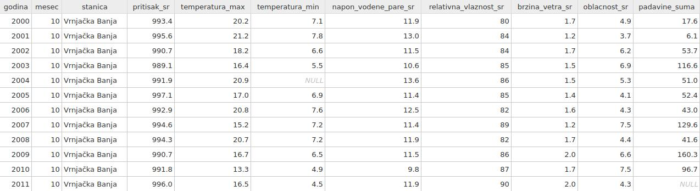
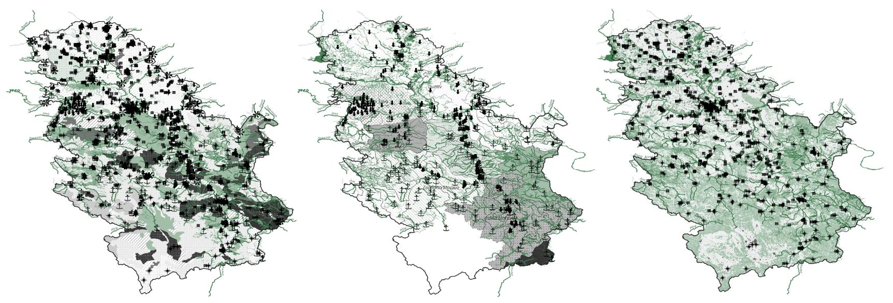

Dobrodošli na AnarGIS
O projektu
AnarGIS je objedinjena baza podataka iz oblasti očuvanja životne sredine koja je za teritoriju Republike Srbije pripremljena u kartografskom GIS formatu.
Osnovna ideja je olakšavanje pristupa podacima koji se često zajedno koriste sakupljanjem u jedinstvenu bazu podataka, uz dodatno čišćenje i standardizovanje kako bi format bio što upotrebljiviji. Svi podaci koji se nalaze u AnarGIS-u preuzeti su od zvaničnih izvora poput republičkih zavoda, agencija i sl. ili su otvorenog tipa i potiču od drugih open-source/community projekata.
Projekat u svojoj srži podržava open-data i open-source ideologije i samim tim pruža celokupnu bazu na raspolaganje bilo za ličnu, obrazovnu ili komercijalnu upotrebu.
Sadržaj
Za detaljan pregled svih podataka i za način upotrebe posetite Wiki stranicu. Ukratko, podaci koji se mogu pronaći u AnarGIS projektu su:
- Dnevni i mesečni meteorološki i klimatološki parametri za period 2000-2024 (izvor: dnevni bilteni i godišnji izveštaji RHMZ-a)
- Dnevni hidrološki parametri površinskih voda za period 2005-2024 (izvor: godišnji izveštaji RHMZ-a)
- Dnevni hidrološki parametri podzemnih voda za period 2020-2024 (izvor: godišnji izveštaji RHMZ-a)
- Mesečni parametri kvaliteta površinskih voda za period 2012-2023 (izvor: SEPA, portal otvorenih podataka)
- Dnevni parametri kvaliteta vazduha za period 2011-2023 (izvor: SEPA, portal otvorenih podataka)
- Dnevni parametri koncentracija polenskih alergena za period 2016-2025 (izvor: SEPA, portal otvorenih podataka)
- Najveći zagađivači po tipu zagađenja životne sredine 2011-2023 (izvor: SEPA, NRIZ, portal otvorenih podataka)

(Primer jedne tabele)
Radi lakše upotrebe takođe su prikupljena neke inženjerske podloge pogodne za detaljnije analize, poput:
- Mreža osmatračkog sistema za sve tipove merenih stanica od iznad
- Hidrološka mreža slivnih područja površinskih voda (izvor: RHMZ)
- Hidrološka mreža podzemnih voda (izvor: RHMZ)
- Hidrološka mreža reka, potoka i kanala (izvor: Geofabrik, OSM)
- Hidrogeološka podloga (izvor: Geološki informacioni sistem Srbije)
- Karta tipa zemljišta - pedološka podloga (izvor: Pedološka karta Jugoslavije, A. Škorić, M. Bogunović)
- Karta upotrebe zemljišta (izvor: Copernicus)

(Primer kako izgledaju podloge)
Sadržaj projekta će se vremenom ažurirati, svežiji podaci će biti ubačeni kako postanu dostupni a takođe je u planu i proširenje sa skroz novim tipovima podataka pa se preporučuje povremeno posećivanje Download stranice za preuzimanje novih verzija.